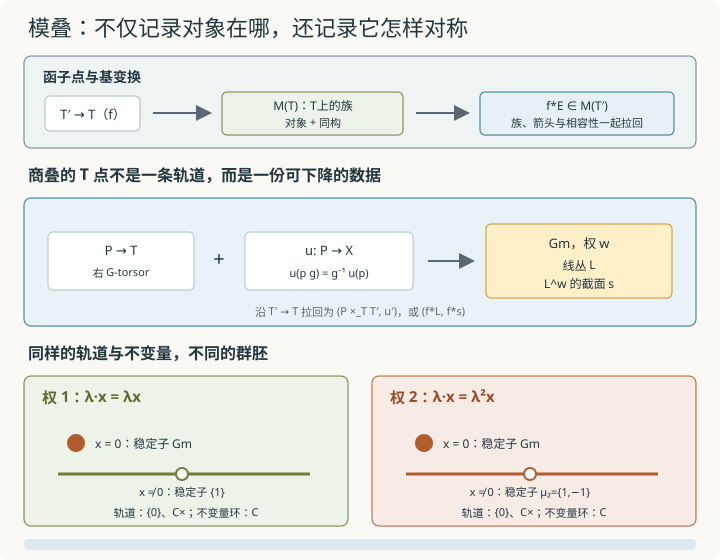
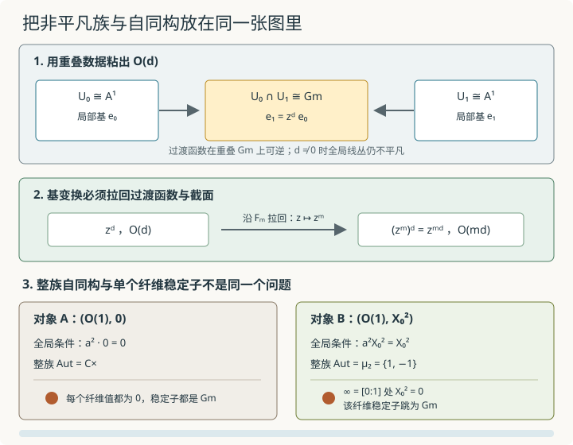

本页目录
- 若所有对象只剩一个名字，它们原来的对称性去了哪里？
- 1. 模问题不是一张对象名单，而是一套随底空间变化的族
- 2. 为什么取同构类集合会丢失可计算信息
- 3. \(B\mathbb G_m\)：几何点只有一类，群胚却绝不平凡
- 4. 商叠 \([X/G]\) 的 T-点：torsor 加等变映射
- 5. 主模型：\(\mathbb G_m\) 以权 \(w\) 作用在 \(\mathbb A^1\)
- 6. 权 1 与权 2：同一轨道图，不同稳定子
- 7. 下降：局部对象和重叠同构何时来自一个全局对象
- 8. 何时称为代数叠：下降还不够
- 9. 同时计算轨道、稳定子与非平凡族
- 10. 四道迁移题
- 11. 通往几何 Langlands 还差哪些具体门槛
- 速查与资料
基础衔接 23 · 模叠：参数空间为什么必须记住自同构
核心先修：层与粘合、Čech 与射影直线、仿射图粘合、纤维与基变换。第 11 节研究路标还会提到 导出范畴，但它不是理解第 1 至 10 节的必要条件。本讲固定底域 \(k=\mathbb C\)。我们从函子点与群胚值模问题出发，完整计算 \(B\mathbb G_m\) 和 \([\mathbb A^1/\mathbb G_m]\) 的两个权作用；目标是看懂“族、基变换、自同构、下降、atlas 与对角线”各自承担什么，不把一张轨道图冒充为模叠。
若所有对象只剩一个名字，它们原来的对称性去了哪里？
1. 模问题不是一张对象名单，而是一套随底空间变化的族
一个几何模问题首先问：对每个测试概形 \(T\)，有哪些以 \(T\) 为参数的对象族？因此它自然表现为反变赋值
\(\mathcal M(T)\) 的对象是 \(T\)-族，箭头是族的同构。之所以取群胚，是因为模问题通常只把同构当作可逆比较；非可逆退化由底空间和族本身编码，不直接作为纤维群胚中的箭头。
给态射
每个 \(T\)-族 \(E\) 都必须能拉回成 \(T'\)-族
若再有 \(g:T''\to T'\)，则 \((fg)^*E\) 与 \(g^*f^*E\) 有规范同构，并满足更高的结合相容性。为了入门常把它写成严格等号，但真正的纤维范畴保存这些规范同构；忽略它们会在复杂基变换中产生不相容选择。
例如“秩 \(r\) 向量丛”的 \(T\)-点不是一个固定向量空间，而是 \(T\) 上秩 \(r\) 的局部自由层。沿 \(f\) 拉回后得到 \(f^*E\)。只列代数闭点上的同构类，既看不到非平凡族，也看不到族在无穷小底空间上的变形。
2. 为什么取同构类集合会丢失可计算信息
给群胚 \(\mathcal M(T)\) 取对象的同构类集合
会删掉每个对象 \(E\) 的自同构群
这不是只少了“对象有多对称”的注释。自同构控制对角线、稳定子、变形理论中的负一次方向，以及许多积分和计数公式中的权重。两个模问题即使有相同的同构类集合，也可能因稳定子不同而不是同一个叠。
最小例子是一个一维复向量空间。所有一维空间彼此同构，所以同构类集合只有一个元素；但一个给定的一维空间有自同构群
把它压成一个普通点，会把所有非零缩放都删掉。模叠 \(B\mathbb G_m\) 正是保存这份信息的对象。
3. \(B\mathbb G_m\)：几何点只有一类，群胚却绝不平凡
对任意测试概形 \(T\)，定义
及其 torsor 同构组成的群胚。\(\mathbb G_m\)-torsor 与线丛等价，所以也可写成
当 \(T=\operatorname{Spec}\mathbb C\) 时，每个线丛都平凡，因此只有一个同构类；但平凡线丛的自同构群是 \(\mathbb G_m(\mathbb C)=\mathbb C^\times\)。所以
右边表示“一个对象及其全部自同构”的群胚，不是普通单点集合。
更重要的是，换成 \(T=\mathbb P^1\) 后会出现 \(\mathcal O(d)\) 等非平凡线丛。它们在每张仿射图上都平凡，却不能由一个全局基向量描述。若只看
这类使用全局函数作规范变换的朴素作用群胚，只能得到平凡 torsor；正确的 \(B\mathbb G_m(T)\) 必须允许在覆盖上平凡、再用过渡函数粘合的 torsor。
4. 商叠 \([X/G]\) 的 T-点：torsor 加等变映射
令代数群 \(G\) 左作用在概形 \(X\) 上。商叠不能只定义成点集 \(X/G\)。它在测试概形 \(T\) 上的对象是
其中 \(P\to T\) 是右 \(G\)-torsor，而 \(u\) 满足
箭头是与 \(u\) 相容的 torsor 同构。这个定义自动包含非平凡 torsor，也让基变换明确可算：
取 \(X=\operatorname{Spec}k\) 且作用平凡，就恢复
若 \(T=\operatorname{Spec}\mathbb C\) 且 torsor 平凡，群胚可以画成普通作用群胚：对象是 \(x\in X(\mathbb C)\)，从 \(x\) 到 \(y\) 的箭头是满足 \(g\cdot x=y\) 的群元素。特别地，
就是稳定子。这个几何点画面适合算稳定子，但不能替代任意 \(T\) 上的 torsor 定义。
5. 主模型：\(\mathbb G_m\) 以权 \(w\) 作用在 \(\mathbb A^1\)
令
并记商叠为
一个 \(T\)-点可具体改写成
理由是：按上面的右 torsor 约定，令 \(L=P\times^{\mathbb G_m}\mathbb C_1\)，其中 \((p\lambda,v)\sim(p,\lambda v)\)。条件 \(u(p\lambda)=\lambda^{-w}u(p)\) 正好让 \(u\) 下降成 \(L^{\otimes w}\) 的截面。沿 \(f:T'\to T\) 基变换时，
对象还不等于群胚。一支箭头
是线丛同构 \(\phi:L\xrightarrow{\sim}L'\)，并且必须满足
沿 \(f\) 拉回时，箭头也变成 \(f^*\phi\)。特别地，一个对象的自同构群可以直接写成
所以“参数移动”不是把一个复数 \(x\) 代入另一张表，而是连线丛、截面、保持截面的同构一起拉回。这个箭头公式正是几何点稳定子在一般底空间上的版本。
先在复几何点上算轨道。无论 \(w=1\) 还是 \(w=2\)，都有两个轨道类型：
非零轨道的闭包包含 \(0\)。坐标环中的正权单项式都不是不变量，因此
所以仿射不变量商是单点，连两个轨道类型都不能分开。朴素轨道集合保留两个元素，却仍删掉下面的稳定子。

轨道集合与不变量商都不能区分权 1、权 2 的全部几何；商叠保留的稳定子立刻看出差异。对一般底空间，还必须把平凡轨道图升级为 torsor 与下降数据。
6. 权 1 与权 2：同一轨道图，不同稳定子
若 \(x=0\)，任意 \(\lambda\in\mathbb G_m\) 都固定它，所以
对两个权都成立。
若 \(x\ne0\)，稳定条件是
因此
而
权 \(2\) 的 \(-1\) 实际上固定每一个点，所以该作用有全局核 \(\mu_2\)；权 \(1\) 的非零轨道则是自由的。两种作用的轨道集合都是“零、非零”两个类型，不变量环也同为 \(\mathbb C\)，但商叠在稠密非零轨道上的稳定子不同。因此
还可以把比较推进一步。令 \(U=\mathbb A^1\setminus\{0\}=\mathbb G_m\)。幂映射
在 fppf 拓扑下满射，核为 \(\mu_w\)，而权 \(w\) 作用在 \(U\) 上是传递的。因此
权 \(1\) 的非零开集商叠就是一个普通点，权 \(2\) 的则是 \(B\mu_2\)。这不只比较了两点的稳定子，而是识别了整块非零开子叠。
用 \((L,s)\) 语言也能看到同一结论。这里仍先取 \(T=\operatorname{Spec}\mathbb C\)：此时非零截面自动处处不消失。对权 \(1\)，\(s\in L\) 把 \(L\) 平凡化，保持 \(s\) 的线丛自同构只能是恒等。对权 \(2\)，\(s\in L^{\otimes2}\) 把 \(L^2\) 平凡化；缩放 \(L\) 的 \(-1\) 仍保持 \(s\)，于是留下 \(\mu_2\)。对一般 \(T\)，只有处处不消失的截面才能平凡化相应线丛；“不恒为零”并不够。
还可以直接构造这个等价，避免只引用“传递作用”的一般定理。对任意 \(T\)，取一个处处不消失的 \(s\in\Gamma(T,L^{\otimes w})\)，并令
这里的等式按每个测试底空间上的局部框架解释。在局部框架 \(e\) 中写 \(s=f e^{\otimes w}\)，其中 \(f\) 可逆，条件就变成 \(t^w=f\)。由于底域是复数，\(w\) 可逆，这给出有限 étale 满射；两个根框架的比恰在 \(\mu_w\) 中。因此 \(P_s\) 是右 \(\mu_w\)-torsor，作用为 \(\ell\cdot\zeta=\zeta\ell\)。线丛同构 \(\phi\) 若保持 \(s\)，就把根框架送到根框架，给出 torsor 同构。
反过来，从右 \(\mu_w\)-torsor \(P\) 构造 \(L=P\times^{\mu_w}\mathbb A^1\)，约定 \((p\zeta,v)\sim(p,\zeta v)\)。局部选择 \(p\) 给出框架 \(e=[p,1]\)；换成 \(p\zeta\) 时框架乘以 \(\zeta\)，所以 \(e^{\otimes w}\) 不变，粘成处处不消失的截面 \(s\)。映射 \([\ell,v]\mapsto v\ell\) 恢复原线丛；映射 \(p\mapsto[p,1]\) 恢复原根框架 torsor。这两个恢复都保持箭头，并与拉回交换，才证明了群胚及基变换层面的等价。根框架的局部构造也可对照 Kummer 序列与 线丛幂平凡化对应的 torsor。
展开核对：箭头、互逆映射与基变换
torsor 条件的具体同构是 \(P_s\times_T\mu_{w,T}\to P_s\times_TP_s\)，把 \((\ell,\zeta)\) 送到 \((\ell,\zeta\ell)\)；逆映射为 \((\ell_1,\ell_2)\mapsto(\ell_1,\ell_2/\ell_1)\)。根框架处处可逆，因此比值在任意测试概形上都良定义，并满足 \(w\) 次方为1。
保持截面的箭头 \(\phi\) 诱导 \(\ell\mapsto\phi(\ell)\)；torsor 箭头 \(\alpha:P\to P'\) 诱导 \([p,v]\mapsto[\alpha(p),v]\)。前者由线性保持右作用，后者由等变性保持等价关系及截面。
记恢复映射为 \(\epsilon:[\ell,v]\mapsto v\ell\) 与 \(\eta:p\mapsto[p,1]\)。它们分别满足 \(\epsilon^{\otimes w}(s_{\rm can})=s\) 和 \(\eta(p\zeta)=\eta(p)\cdot\zeta\)；在局部根框架中二者都是同构。换框架 \(\ell\mapsto\zeta\ell\) 时系数变为 \(\zeta^{-1}v\)，所以 \(\epsilon\) 的局部逆粘合成全局逆。
对任意 \(f:T'\to T\)，有规范同构
第一式就是把根方程拉回，第二式可在 torsor 的平凡化覆盖上验证后粘合。上述 \(\epsilon,\eta\) 在这些识别下自然；因此对象、箭头和改变底空间的操作确实同时被保留。
7. 下降：局部对象和重叠同构何时来自一个全局对象
令 \(\{T_i\to T\}\) 是 fppf 覆盖。模问题成为 stack in groupoids，需要两类下降条件：
- 对两个对象 \(E,F\in\mathcal M(T)\)，它们的同构在覆盖上构成一个层；局部同构若在重叠上一致，就唯一粘合。
- 给每个 \(T_i\) 上的对象 \(E_i\)，以及重叠 \(T_{ij}\) 上的同构
若在三重重叠满足 cocycle
则这些数据必须来自某个全局对象 \(E\)，并且这个粘合在同构意义下唯一。
对 \(B\mathbb G_m\)，这就是线丛的下降。沿用 Čech 讲义的基向量约定，以 \(\mathbb P^1=U_0\cup U_1\) 为例，两张图上取平凡线丛，并在重叠上规定 \(e_1=z^d e_0\)，就粘出 \(\mathcal O(d)\)。当 \(d\ne0\) 时，不能用两张图上的可逆正则函数把 \(z^d\) 同时消成 \(1\)，所以得到真正的非平凡全局 torsor。
这解释了为什么商叠定义要使用 torsor。只写 \(X(T)\) 上的全局群作用，只捕捉已经全局平凡化的 torsor；stackification 补入所有局部平凡且满足下降的数据。
8. 何时称为代数叠：下降还不够
一个 fppf stack in groupoids \(\mathcal X\) 若要成为本讲约定下的代数叠，还要满足两条几何可表示性条件：
并且存在概形 \(U\) 与光滑满射
第二支箭头叫光滑 atlas。它允许用一张概形图覆盖叠，但叠本身通常不是概形。第一条对角线条件并非技术附录：对两个 \(T\)-对象 \(E,F\)，纤维积
正是 \(\operatorname{Isom}_T(E,F)\)。因此对角线可表示，意味着“同构与自同构也组成可控的代数几何对象”。
若 \(G\) 是光滑仿射代数群并作用在概形 \(X\) 上，标准映射
是光滑满射 atlas；沿一个 \(T\)-点 \((P,u)\) 拉回这张 atlas，得到的正是 torsor \(P\to T\)。对角线则记录等变同构。于是本讲的
都是代数叠。
Deligne-Mumford 条件可用 étale atlas 描述；等价地，在通常的代数叠假设下，它要求对角线非分歧。因此几何稳定子群概形必须是非分歧的；在本讲的复数域有限型例子中，正维稳定子一定不可能出现。\([\mathbb A^1/\mathbb G_m]\) 在 \(0\) 处有正维稳定子 \(\mathbb G_m\)，所以无论权 \(1\) 还是权 \(2\)，都不是 Deligne-Mumford 叠。权 \(2\) 的非零稳定子 \(\mu_2\) 在 \(\mathbb C\) 上有限 étale，并不能消除原点处的失败。
9. 同时计算轨道、稳定子与非平凡族
无脚本对照：同样两个轨道，不意味着相同的稳定子。表中最后一列指整个非零开子叠；原点本身不在其中。
| 权 | 代表 | 轨道 | 稳定子 | 整个仿射不变量商 | 非零开子叠 |
|---|---|---|---|---|---|
| 1 | 原点0 | {0} | Gm | Spec C | Bμ_1 |
| 1 | 非零1 | C× | μ_1 | Spec C | Bμ_1 |
| 2 | 原点0 | {0} | Gm | Spec C | Bμ_2 |
| 2 | 非零1 | C× | μ_2 | Spec C | Bμ_2 |
先在复几何点上改变权与零/非零类型。图画单位圆上的群元素 λ 与其像 λ^w x，标出完整的有限稳定子 μ_w；x=0 时整个复乘法群都是稳定子，单位圆仅是其中的实截面，不能把它当作整个 Gm。表格同时保留轨道集和不变量商，比较信息丢在哪里。
无脚本对照：固定映射次数3、权2，比较负、零、正线丛次数。非零全局截面可以有零点；整族自同构为μ₂不保证整族落在非零开子叠。
| d | m | w | 所选截面 | 整族对象存在 | 全局自同构 | 无穷远纤维稳定子 | 整族属于非零开子叠 |
|---|---|---|---|---|---|---|---|
| -1 | 3 | 2 | 零截面 | 是 | C× | Gm | 否 |
| -1 | 3 | 2 | 示例非零截面 | 否 | 不适用（所选非零截面不存在） | 不适用（所选对象不存在） | 不适用 |
| 0 | 3 | 2 | 零截面 | 是 | C× | Gm | 否 |
| 0 | 3 | 2 | 示例非零截面 | 是 | μ_2 | μ_2 | 是 |
| 1 | 3 | 2 | 零截面 | 是 | C× | Gm | 否 |
| 1 | 3 | 2 | 示例非零截面 | 是 | μ_2 | Gm（截面值在∞为0） | 否 |
再把底空间换成 P¹，实际拉回过渡函数。图沿重叠圆 z=e^(iθ) 展示 z^d 与 (z^m)^d 的相位，次数变化来自代入，不是把若干离散点粘起来。截面空间维数由两张图的正则性计算：对 L^w=O(wd)，局部多项式次数必须在0到wd之间，所以维数为 max(wd+1,0)。负次数时只有零截面；零截面始终是合法对象。
对非负 wd，例取齐次截面 X₀^(wd)，它在无穷远的零点阶为 wd，拉回后为 mwd。当 wd>0 时这不是处处非零截面；它的零点不能被“非零轨道”按钮抹掉。两个实验分别审查几何点和全局族，不能把前者的非零数值冒充任意线丛的全局非零框架。
默认 \(w=2,x=1,T=\operatorname{Spec}\mathbb C\) 时：
因此轨道集合报告“非零”这一类，不变量商报告一个点，stack 视图还必须报告自同构 \(\{1,-1\}\)。切到 \(x=0\) 后稳定子变成整个 \(\mathbb G_m\)；切到权 \(1\) 后非零稳定子变平凡。组件若只显示两个轨道点，就没有实现本讲的教学目标。
对 \(T=\mathbb P^1,d=1\)，无脚本状态显示过渡函数 \(z\) 给出 \(\mathcal O(1)\)。它在 \(U_0,U_1\) 上分别平凡，基变换到任一图后确实成为平凡 torsor；但在整个 \(\mathbb P^1\) 上不能选出无零全局框架。
现在把非平凡 torsor 与自同构真正放进同一个对象。取
零截面给出对象 \((\mathcal O(1),0)\)。因为 \(\mathbb P^1\) 上的全局可逆正则函数只有常数，
再取 \(s=X_0^2\in H^0(\mathbb P^1,\mathcal O(2))\)。它不是零截面，却在无穷远点 \([0:1]\) 有二阶零点，因此不是 \(\mathcal O(2)\) 的全局框架。一个全局线丛自同构由常数 \(a\in\mathbb C^\times\) 给出；保持 \(s\) 要求
故
这个全局自同构虽然也是 \(\mu_2\)，却不能推出整族属于非零开子叠 \(B\mu_2\)：\(s\) 在无穷远消失，只有把底空间限制到它不消失的开集后，才得到根框架 torsor。自同构群相同不等于模对象具有相同的开集归属。
注意两种“稳定子”不能混为一谈：整族的全局自同构必须在所有点同时保持 \(s\)，所以只剩 \(\mu_2\)；把该族拉回到无穷远点后，截面值变成 \(0\)，该单个纤维对象的稳定子却跳成整个 \(\mathbb G_m\)。纤维稳定子可以随底空间的点跳跃，而全局族自同构是满足全局相容条件的那些变换。

同一条非平凡线丛配不同截面，会得到不同的全局自同构；全局自同构也不等于逐点稳定子的简单交替标签。箭头必须保持整族数据，纤维稳定子则可以在零点处跳跃。
10. 四道迁移题
题一。 把主模型改成权 \(3\) 作用
写出商叠的 \(T\)-点，计算 \(x=0\) 与 \(x\ne0\) 的稳定子，并求仿射不变量环。它与权 \(1\) 商叠能否等价？
查看线丛、截面与稳定子
一个 \(T\)-点是线丛 \(L\) 与截面
\(x=0\) 的稳定子是整个 \(\mathbb G_m\)。若 \(x\ne0\)，稳定条件 \(\lambda^3=1\) 给出
所有正次单项式都有正权，所以
权 \(1\) 与权 \(3\) 的轨道类型和仿射不变量商相同，但非零点稳定子分别为平凡群与 \(\mu_3\)，因此商叠不等价。
题二。 对一般 \(w\ge1\)，令 \(U=\mathbb A^1\setminus\{0\}\)。证明权 \(w\) 作用的开子商叠满足
为什么这比“每个非零点的稳定子都是 \(\mu_w\)”更强？
查看传递作用与剩余群胚
幂映射 \(q:\mathbb G_m\to\mathbb G_m,\lambda\mapsto\lambda^w\) 在复数域上是有限 étale 满射，核为 \(\mu_w\)。权 \(w\) 作用就是通过 \(q\) 让 \(\mathbb G_m\) 在 \(U=\mathbb G_m\) 上作乘法；它在 fppf 局部传递，任一几何点的稳定子是 \(\mu_w\)。传递作用的商叠等价于一个稳定子的分类叠，因此
具体的互逆构造是第 6 节的 \((L,s)\mapsto P_s\) 与 \(P\mapsto(P\times^{\mu_w}\mathbb A^1,s)\)。应检查根框架存在于 étale 覆盖上、保持截面的箭头与 torsor 箭头互相对应、以及两种构造都与拉回交换；仅在复点上列出 \(w\) 个根还没有完成证明。
点稳定子只描述单个对象的自同构；叠等价还说明任意测试概形 \(T\) 上的对象、箭头与基变换共同组成 \(\mu_w\)-torsor 的群胚。它把一个几何点计算提升成了函子点层面的陈述。
题三。 在 \(T=\mathbb P^1\) 上取 \(L=\mathcal O(d)\) 与权 \(w\ge1\)。分别考虑
计算两者的全局自同构。若 \(d>0\)，第二个截面在无穷远处消失；为什么该点的纤维稳定子与整族的全局自同构不同？
查看保持整族与保持单个纤维的区别
\(\mathbb P^1\) 上全局可逆正则函数只有常数，所以 \(L\) 的全局自同构都是乘以 \(a\in\mathbb C^\times\)。零截面不施加额外条件，故
对 \(s=X_0^{wd}\)，保持截面要求 \(a^ws=s\)。该截面不恒为零，因此等式在它不消失的稠密开集上推出 \(a^w=1\)，从而
当 \(d>0\) 时，\(s\) 在 \([0:1]\) 的值为零。拉回到该点后，保持零向量的标量可以是任意 \(\mathbb C^\times\)，所以纤维稳定子为 \(\mathbb G_m\)。但一个整族自同构必须同时保持其他点上的非零截面值，故全局只剩 \(\mu_w\)。
题四。 在 \(B\mathbb G_m(\mathbb P^1)\) 中，用两张标准仿射图和基向量关系 \(e_1=z^2e_0\) 构造线丛。再沿
拉回。新的过渡函数和线丛是什么？为什么这个计算同时检验了族的基变换与下降，而不只是次数相乘的口诀？
查看重叠上的实际拉回
\(z^2\) 粘出 \(\mathcal O(2)\)。在 \(U_0\) 上，\(F_3\) 把目标坐标 \(z\) 拉回成源坐标 \(z^3\)，所以过渡函数拉回为
它粘出
计算不是只比较整数：局部平凡线丛先沿两张图拉回，重叠同构 \(z^2\) 也必须沿 \(F_3\) 拉回，并仍满足 cocycle。正是这组拉回后的下降数据定义了全局线丛；次数 \(3\cdot2=6\) 是计算结果。
11. 通往几何 Langlands 还差哪些具体门槛
本讲的 quotient stack 是入口，不是研究级模叠理论的替代品。在选定曲线、群、扭曲以及范畴版本后，几何 Langlands 的一种研究级目标性表达形如
这里的等价依赖具体版本与假设，不能当作本讲已经证明或可以无条件调用的普通恒等式。要理解它所表达的对应，至少还要逐项补齐：
- 把 \(\operatorname{Bun}_G(T)\) 写成曲线 \(X\times T\) 上主 \(G\)-丛的群胚，并掌握其 atlas、对角线、非准紧性与连通分支。
- 学习 cotangent complex 与 derived mapping stack。对象的无穷小自同构、变形和障碍不是一张经典切空间能同时保存的；例如 \(G\)-丛 \(P\) 的变形复形由 \(R\Gamma(X,\operatorname{ad}P)[1]\) 控制。
- 在叠上构造 D-模的导出范畴及六函子，处理非安全映射、扭曲和 \(\operatorname{Bun}_G\) 上的半密度修正；上一讲的单个 Weyl 商模远远不够。
- 理解 Hecke correspondence 怎样通过拉回、张量与推前成为函子，并验证不同点、不同表示之间的张量相容性。
- 在谱侧学习 derived stack \(\operatorname{LS}_{\check G}\)、IndCoh 与奇异支撑；\(\operatorname{Nilp}\) 是余切方向中的全局幂零条件，不是“稳定子含幂零矩阵”的简称。
完成这些门槛后，才进入几何 Langlands 前沿讲的正式公式。权作用实验只证明“稳定子与族必须保留”，没有构造 \(\operatorname{Bun}_G\)、局部系统模叠、Hecke 特征对象或范畴等价。
速查与资料
模问题把 \(T\) 送到 \(T\)-族及其同构组成的群胚，并沿基变换拉回。\(BG(T)\) 是 \(G\)-torsor 群胚；\([X/G](T)\) 是 torsor 加等变映射。对权 \(w\) 的 \(\mathbb G_m\curvearrowright\mathbb A^1\)，\(T\)-点是 \((L,s\in L^w)\)，箭头是保持截面的线丛同构；非零开子叠等价于 \(B\mu_w\)。权 \(1,2\) 的轨道与不变量商相同，非零稳定子却分别为 \(1,\mu_2\)。代数叠还要求可表示对角线与光滑满射 atlas。
stack in groupoids 的下降定义见 Stacks Project：Stacks in groupoids，代数叠的三项条件见 Algebraic stacks，商叠构造见 Quotient stacks，\(BG\) 与 torsor 的精确定义见 Classifying torsors。本讲没有建立一般 Artin 可表示性、coarse moduli space、GIT 稳定性、cotangent complex 或 derived stack；它们是进入研究级模空间前必须继续学习的内容。核查：2026-09-13。